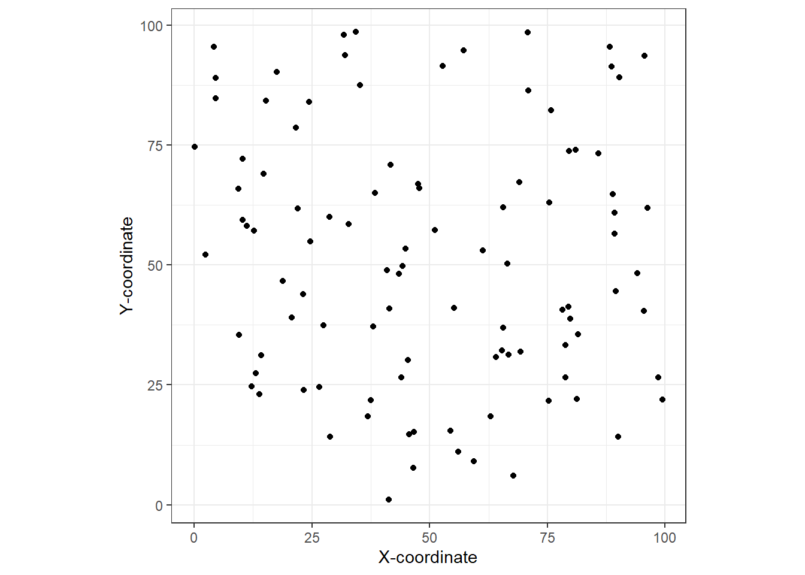
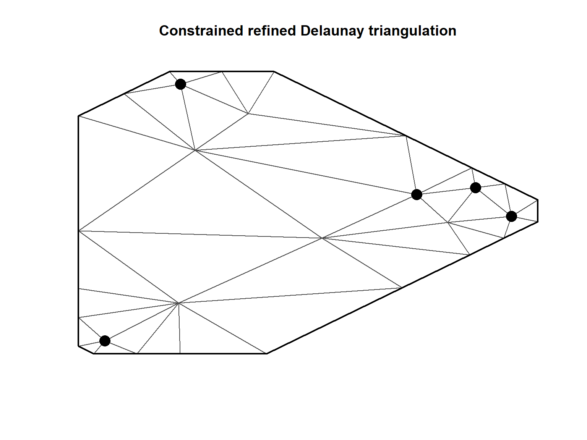

10 Matern correlation and SPDE
本章では、回帰モデルに空間的相関を加える方法をシミュレーションデータを用いて学ぶ。
10.1 Continuous Gaussian field
N個の空間的座標(\(s_1, s_2, \dots, s_N\))があり、それぞれの場所でデータ\(y(s_1), y(s_2), \dots, y(s_N)\)が確率過程\(Y(s)\)によって得られるとする。もし\(y(s_i)\)が正規分布に従うとするとき、\(Y(s)\)を連続ガウス場(continuous gaussian field)という。この正規分布には平均と分散共分散行列が必要である。
ここでは、応答変数ではなく空間的相関を表す項\(u(s_1), u(s_2), \dots, u(s_N)\)が確率過程\(U(s)\)によって得られるとする(第5章を参照)。このとき、\(u(s_i)\)が正規分布から得られると仮定するとき、\(U(s)\)を連続ランダムガウス場という。
10.2 Models that we have in mind
通常の空間データに対する線形回帰モデルは以下のように書ける。
\[
\begin{aligned}
&y(s_i) \sim N(\mu(s_i), \sigma^2)\\
&\mu(s_i) = Covariates(s_i)
\end{aligned}
\]
ポワソン分布のGLMなら同様に以下のように書ける。
\[
\begin{aligned}
&y(s_i) \sim Poisson(\mu(s_i))\\
&log(\mu(s_i)) = Covariates(s_i)
\end{aligned}
\]
これらは空間的な相関を考慮していない。空間的な相関を考慮したモデルは以下のようになる(第5章を参照)。
\[
\begin{aligned}
&y(s_i) \sim N(\mu(s_i), \sigma^2)\\
&\mu(s_i) = Covariates(s_i) + u(s_i)
\end{aligned}
\tag{10.1}
\]
ポワソン分布のGLMなら同様に以下のように書ける。
\[
\begin{aligned}
&y(s_i) \sim Poisson(\mu(s_i))\\
&log(\mu(s_i)) = Covariates(s_i) + u(s_i)
\end{aligned}
\tag{10.2}
\]
10.3 Matern correlation
\(u(s_i)\)の分散共分散行列としては、サンプリングをした場所のユークリッド距離とMatern相関関数(第3.3参照)を用いる。Matern関数は以下のように書ける。\(K_{\nu}()\)は第2種ベッセル関数である。
\[ cor_{Matern}(U(s_i), U(s_j)) = \frac{2^{1-\nu}}{\Gamma(\nu)} \times (\kappa \times ||s_i - s_j||)^\nu \times K_\nu(\kappa \times ||s_i - s_j||) \]
この関数を説明するため、100か所(\(s_1, s_2, \dots, s_{100}\))からデータをサンプリングしたとするシミュレーションを行う。X座標とY座標を以下のようにランダムにシミュレートする。
得られた\(s_i\)をプロットすると以下のようになる。
data.frame(x = x1,
y = y1) %>%
ggplot(aes(x = x, y = y))+
geom_point()+
theme_bw()+
theme(aspect.ratio = 1)+
labs(x = "X-coordinate", y = "Y-coordinate")
2つの場所間の距離\(||s_i - s_j||\)のヒストグラムと、距離の累積割合を示したのが図10.1である。
dist <- dist(cbind(x1,y1)) %>% as.matrix()
diag(dist) <- NA
dist.vec <- as.vector(dist) %>% na.omit()
data.frame(dist = dist.vec) %>%
ggplot(aes(x = dist))+
geom_histogram(alpha = 0,
color = "black",
binwidth = 8)+
theme_bw()+
theme(aspect.ratio = 1)+
labs(title = "A", x = "Distances between sites",
y = "Frequency") -> p1
data.frame(x = sort(dist.vec),
y = 1:length(dist.vec)/length(dist.vec)) %>%
ggplot(aes(x =x, y = y))+
geom_line()+
theme_bw()+
theme(aspect.ratio = 1)+
labs(title = "B", x = "Distances between sites",
y = "Cumlutive proportion") -> p2
p1 + p2図10.1: A: Histogram of distances between sites in the simulation study. B: Cumulative proportion versus distance between sites.
ここで、\(\nu = 1\)とするときのMatern関数は以下のようになる。これは、INLAのデフォルトでもある。
\[
cor_{Matern}(U(s_i), U(s_j)) = \kappa \times ||s_i - s_j|| \times K_1(\kappa \times ||s_i - s_j||)
\]
\(\kappa\)の値を様々に変えたときのMatern関数は以下のように計算できる。
kappa <- c(0.01,0.03,0.05,0.07,0.1,0.3,0.5,1,2)
d <- seq(0, max(dist.vec), length = 1000)
corMatern <- data.frame()
for(i in 1:length(kappa)){
corMatern_i <- data.frame(kappa = kappa[i],
dist = d,
cor =kappa[i]*d*besselK(kappa[i]*d,1))
corMatern_i[1,3] <- 1
corMatern <- bind_rows(corMatern, corMatern_i)
}第3章で、自己相関がなくなるまでの距離をレンジ(range)と呼んだ。Matern関数では、レンジ\(r\)は以下の式で表せる。
\[ r = \frac{\sqrt{8 \times \nu}}{\kappa} \]
様々な\(\kappa\)のMatern関数を示したのが図(10.2)である。縦の点線でレンジを表している。また、横の点線はMatern関数の値が0.1のところを示している。\(\kappa\)の値が大きいほどより近い距離で空間的な相関がなくなることがわかる。
r_kappa <- data.frame(kappa = str_c("kappa = ", kappa),
r = sqrt(8)/kappa)
corMatern %>%
filter(cor >= 0.01) %>%
mutate(kappa = str_c("kappa = ", kappa)) %>%
ggplot(aes(x = dist, y = cor))+
geom_line()+
geom_vline(data = r_kappa,
aes(xintercept = r),
linetype = "dashed")+
geom_hline(yintercept = 0.1,
linetype = "dashed")+
theme_bw()+
theme(aspect.ratio = 1)+
facet_rep_wrap(~kappa,
repeat.tick.labels = TRUE,
scales = "free")
図10.2: Matérn correlation plotted versus distance for the simulated data set in Figure 11.1. Each panel corresponds to a different κ value.
さて、第5章でも触れたように、空間的な相関を加えたモデル(式(10.1))では空間的相関を表す項\(u_i\)の分散共分散行列\(\bf{\Sigma}\)にMatern関数を用いる。
\[ \bf{\Sigma} = cov_{Matern}\bigl( U(s_i), U(s_j)\bigl) = \sigma_u^2 \times cor_{Matern}\bigl( U(s_i), U(s_j)\bigl) \]
これを用いて、モデル式を以下のように書ける。GFはガウス場であることを表している。すなわち、私たちはガウス場の分散共分散を得るために2つのパラメータ\(\kappa, \sigma_{u}\)を推定する必要がある。最尤推定によって求めることもできるが、モデルが複雑になるとそれは難しくなってくる。
\[ \begin{aligned} &y(s_i) \sim N(\mu(s_i), \sigma^2)\\ &\mu(s_i) = Covariates(s_i) + u(s_i)\\ &\bf{u} \sim GF(0, \bf{\Sigma}) \end{aligned} \tag{10.3} \]
ポワソン分布のGLMなら同様に以下のように書ける。
\[
\begin{aligned}
&y(s_i) \sim Poisson(\mu(s_i))\\
&log(\mu(s_i)) = Covariates(s_i) + u(s_i)\\
&\bf{u} \sim GF(0, \bf{\Sigma})
\end{aligned}
\tag{10.4}
\]
10.4 SPDE approach
通常のガウス場はサンプルサイズが大きくなると問題が生じることがある。計算をシンプルにするために用いられる方法の一つが、ガウスマルコフランダム場(Gaussian Markovian RandomField: GMRF)を用いることである。GMRFを用いれば、GFの分散共分散行列を近似することができる。
さらに、GMRFについて推定する際には以下の2つのショートカットを用いることができる。まず一つ目は、確率偏微分方程式(SPDE)を用いることである(理解する必要はない)。以下の式(10.5)を解くと、GMRFのハイパーパラメータが得られるとが分かっている。左辺は、\(U(s)\)の要素を二次微分したものの合計を表す。右辺は、ガウス場でのホワイトノイズ過程を表す。
\[ (\kappa^2 - \Delta)^{\alpha/2} \tau U(s) = W(s) \tag{10.5} \]
Lindgren and Rue (2015) はこの式を解くと以下が導かれることを示している。なお、\(d\)は空間の次元を表し、2次元空間モデルなら2、時系列モデルなら1である。INLAのデフォルトでは\(\alpha = 2\)なので、2次元空間モデルでは\(\nu = 1\)となる。
\[ \nu = \alpha - \frac{d}{2} \tag{10.6} \]
また、式(10.5)を解くと\(\sigma^2_{u}\)外貨のように推定できる。
\[ \sigma_{u}^2 = \frac{\Gamma(\nu)}{\Gamma(\alpha) \times (4 \pi)^{d/2} \times \kappa^{2\nu} \times \tau^2} \]
それでは、(10.5)はどのように解くことができるだろうか? Lindgren et al. (2011) はそのための理論を構築している。
10.4.1 Mesh
Lindgren et al. (2011) では、メッシュと呼ばれるイレギュラーなグリッドを用いる。メッシュは、調査区間をかぶらないように三角形に分ける。これらの三角形は隣接する各三角形と1つの共通の辺と2つの共通の点を有する。三角形を作成する方法としてはいろいろな方法がある。例えば、ドロネー法と呼ばれる方法では、三角形の内角の最小値を最大にするように三角形に分割する。例として、先ほどシミュレートした100個のデータについてメッシュを作成したものを図10.3に示した。
loc <- cbind(x1, y1)
mesh1 <- inla.mesh.2d(loc,
## 三角形の辺の長さの最大値
max.edge=c(10),
## ポイント間の最小距離
cutoff = 0.5)
par(mfrow=c(1,1), mar=c(0,0,2,0))
plot(mesh1)
points(loc, col = 1, pch = 16, cex = 2)図10.3: Triangularisation for simulated data. Black dots are sampling locations. Where triangles come together is called a vertex.
10.4.2 Finite element approach
メッシュを作成したことで有限要素アプローチ(finite element approach)という以下の式が成り立つ。
\[ u(s_i) = \Sigma_{k=1}^G a_k(s_i) \times w_k \tag{10.7} \]
これはどういうことだろうか?以下のシミュレーションで説明する。
10.4.3 Simulation study with five points
100ポイントでは説明するのにあまりに複雑なので、5ポイントのデータで説明を行う。まず、5ポイントのデータをシミュレートする。
続いて、この5ポイントについてメッシュを作成する。

さて、それでは式(10.7)の説明に入る。\(G\)はメッシュ内の頂点の数であり、Rでは以下のように求められる。
## [1] 31よって、例えば1つ目のポイント\(s_1\)については以下のように書ける。
\[
u(s_1) = \Sigma_{k=1}^{31} a_k(s_1) \times w_k \tag{10.8}
\]
\(a_k(s_1)\)は単純なもので、\(k\)番目の頂点が\(s_1\)であるか否か(1/0)である。これは、以下のように確認できる。31列のデータが5行あり、各行は\(s_1, \dots s_5\)に対応する。ドットは0を表す。すなわち、\(s_1\)は9番目の頂点ということである。つまり、\(a_1(s_1) = 0, a_2(s_1) = 0, \dots, a_8(s_1) = 0, a_9(s_1) =1, a_{10}(s_1) = 0, \dots, a_{31}(s_1) = 0\)である。
## 5 x 31 sparse Matrix of class "dgCMatrix"
##
## [1,] . . . . . . . 0 1 . . . . . . . . . . . . . 0 . . . . . . . .
## [2,] . . . . . . . . . 1 . . . 0 . . . . . . . . . . . . 0 . . . .
## [3,] . . . . . . . . . . 1 . . . . . . . . . . 0 . . . . 0 . . . .
## [4,] . . . . . . . . . . . 1 0 . . 0 . . . . . . . . . . . . . . .
## [5,] . . 0 . . . . . . . . . 1 . . . . . . . . . . . 0 . . . . . .全長点の座標は以下のように確認できる。\(s_1\)は9行目のデータである。
最後に\(w_k\)である。INLAでは、式(10.5)を少し修正したものを用いて\(w_k\)とその分散共分散行列を取得する。式(10.7)の利点は、\(w_1, w_2, \dots, w_{31}\)を求めることができる点である。
10.5 Weighting factors … again
先ほどは全てのサンプリングポイントがメッシュの三角形の頂点と一致したが、三角形の内側にサンプリングポイントを作ることも可能である。図10.4はその一例を示したものである。作成方法については後程説明する。
set.seed(1231)
coords <- cbind(x1 = runif(5),
y1 = runif(5))
pl.dom <- cbind(c(0,1,1,0), c(0,0,1,1))
mesh2 <- inla.mesh.2d(pl.dom,
max.edge= 0.5)
plot(mesh2)
points(coords, pch=16, cex = 2) 図10.4: Different mesh for the five sampling locations. In this case all sampling locations are inside triangles and not on the vertices.
メッシュは41ポイントを有する。\(a_k(s_i)\)は以下のようになる。先ほどのように1か0ではなく、0と0から1の間の少数のいずれかであることが分かる。
A <- inla.spde.make.A(mesh2, loc = S)
A %>%
as.matrix() %>%
as.data.frame() %>%
datatable(options = list(scrollX = 41)) %>%
formatRound(columns = 1:41, digits = 3)例えば、\(a_{14}(s_1) = 0.338, a_{19}(s_1) = 0.100, a_{36}(s_1) = 0.562\)で、それ以外の\(a_k(s_1)\)は0である。0以外の値をとる頂点は、\(s_1\)が含まれる三角形の頂点であるので、\(u(s_1)\)は式(10.8)から以下のように書ける。
\[ u(s_1) = 0.338 \times w_{14} + 0.100 \times w_{19} + 0.562 \times w_{36} \]